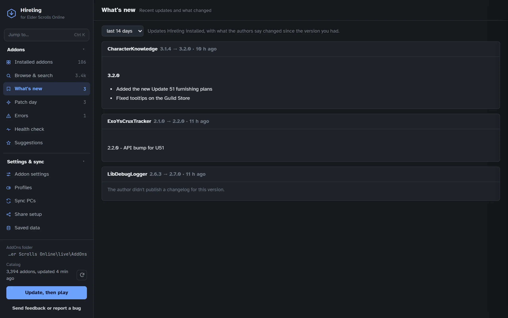

Update & install all updates everything that's out of date and installs any library an addon is missing. You can also let it update on its own and keep a few addons for updating by hand.
The old version is kept, with its saved settings. If an update breaks something, roll it back from the addon's page, and Hireling leaves that addon alone until the author puts out a newer version.
Update, then play updates your addons, refreshes your price data and starts ESO, through Steam or the launcher. Afterwards, What's new shows what each author says changed.
